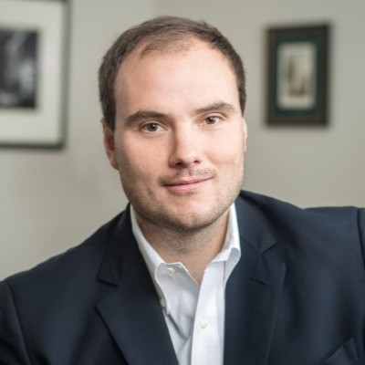
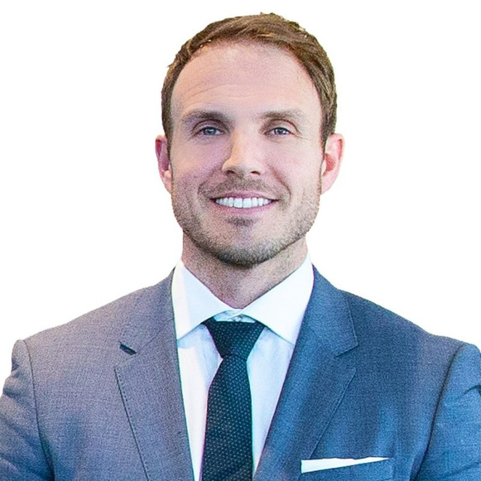

Pablo Valdés
MD, PhD, FAANS
Co-Founder · CEO
Pablo is a brain tumor neurosurgeon-scientist and optical engineer at UTMB who trained at Dartmouth, Harvard, and MIT. His work on measuring faint fluorescence during brain tumor surgery established the quantitative imaging methods at the heart of OncoLight’s technology.

Alankar Kotwal
PhD
Co-Founder · Robotics & Systems
Alankar trained in robotics, optics, and computational imaging at Carnegie Mellon. He integrated the optics, cameras, and robotic arm in OncoLight’s platforms and leads optical development for the company.

Ashok Veeraraghavan
PhD
Co-Founder · Computational Imaging
Ashok chairs the Department of Electrical and Computer Engineering at Rice University, where his group designs cameras and the algorithms that turn their measurements into images. At OncoLight, he leads computational imaging and the application of artificial intelligence to surgical imaging.

Joshua Bernstock
MD, PhD, MPH
Co-Founder · Commercialization & Strategy
Joshua is a neurosurgeon-scientist and medical technology founder. He trained at the NIH, University of Cambridge, Harvard, and MIT. He brings that clinical experience to his work leading OncoLight’s strategy, partnerships, and clinical translation.

Kyle D’Arcey
BSc, MBA
Chief Operating Officer
Kyle has 15 years of experience in medical technology. At Synaptive Medical, he helped bring robotic exoscopes to market and establish them as a category in surgical imaging.